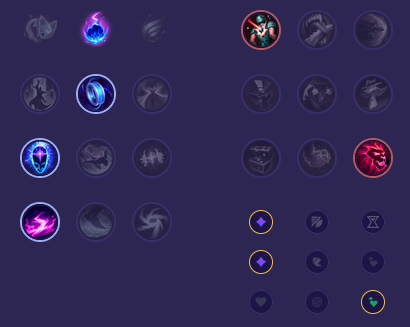

Starter: 2x Mikstura Zdrowia Core Bulid: Kolec Królestwa Zak'Zaka Buty Maga Towarzysz Luden Full Bulid: Skupienie Horyzontalne Klepsydra Zhonyi Morellonomicon

Słaby przeciwko: - Karma - Pyke - Janna - Poppy - Rakan - Senna Dobry przeciwko: - Leona - Bard - Lux - Morgana - Soraka - Alistar